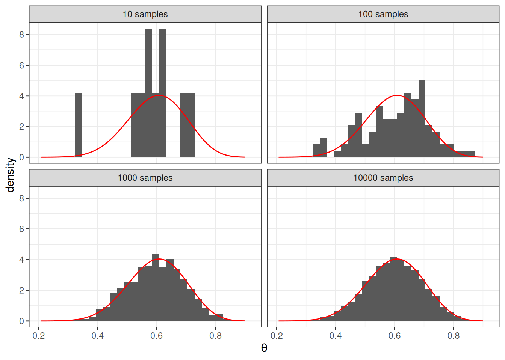
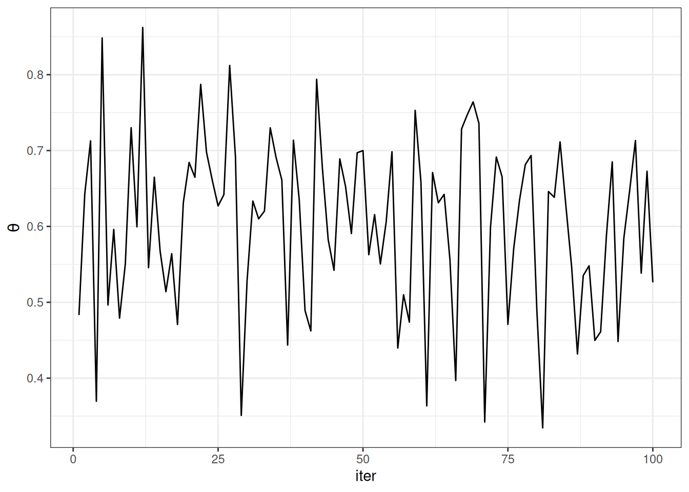
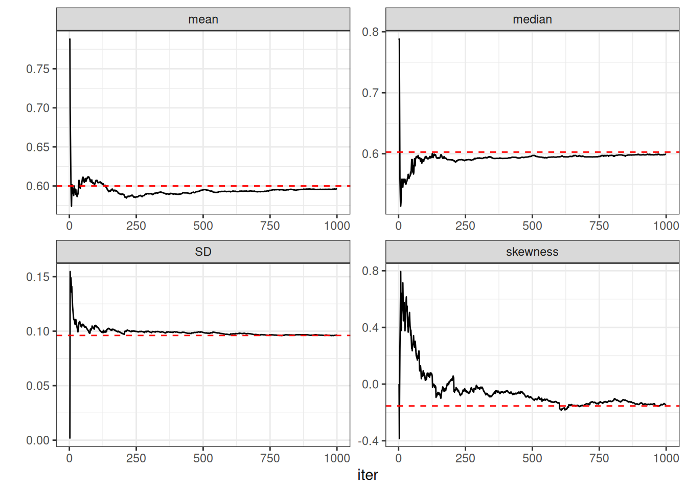
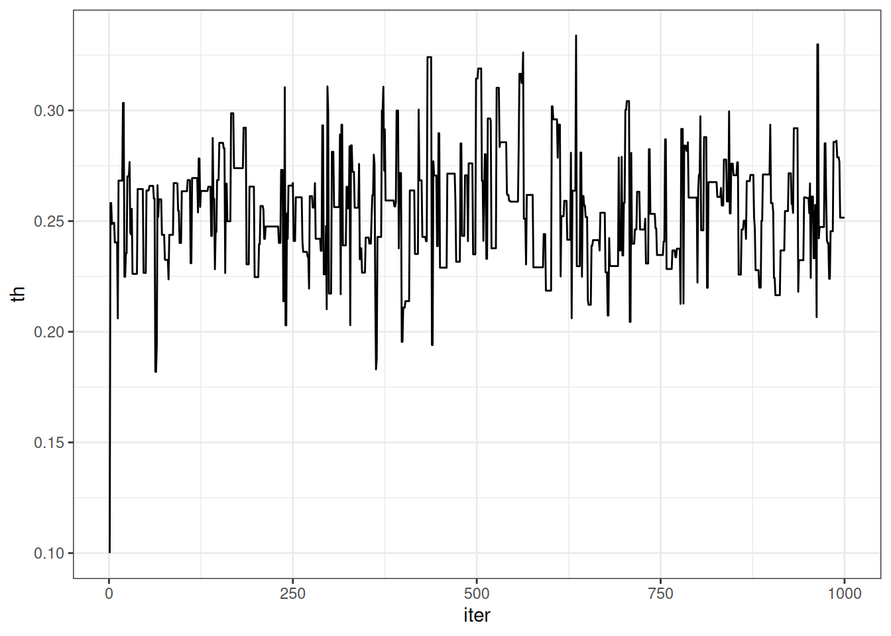
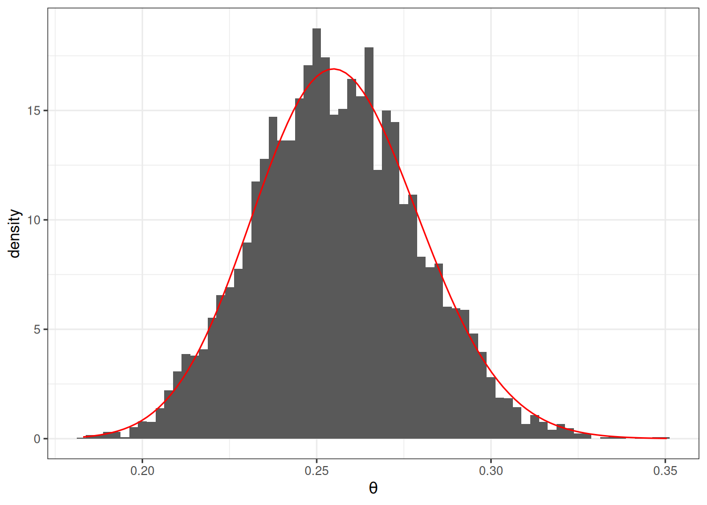
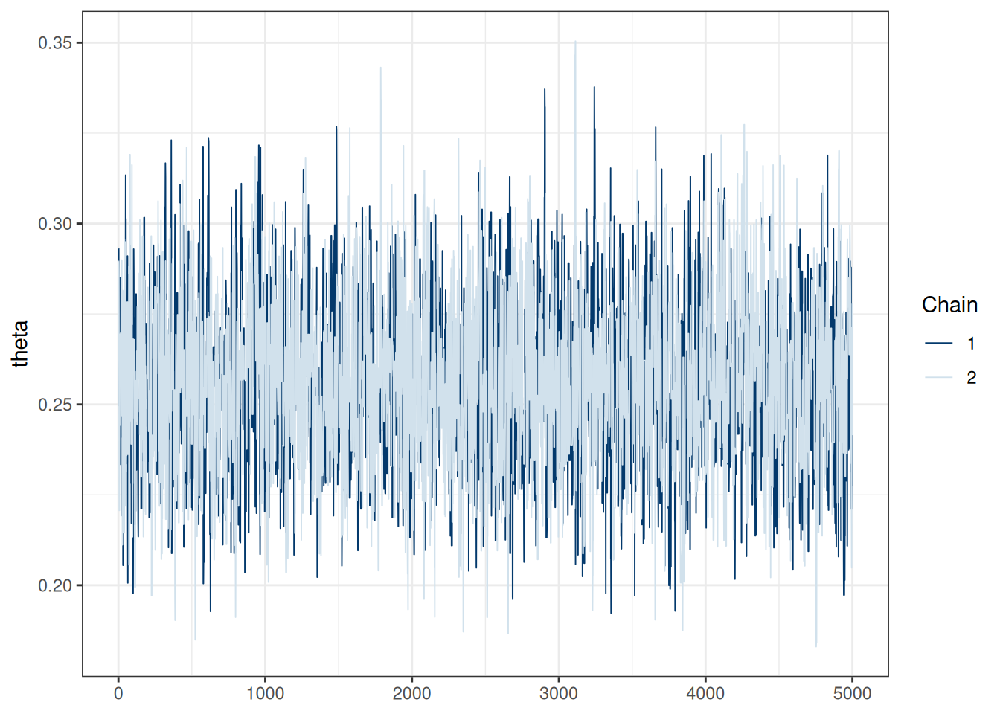
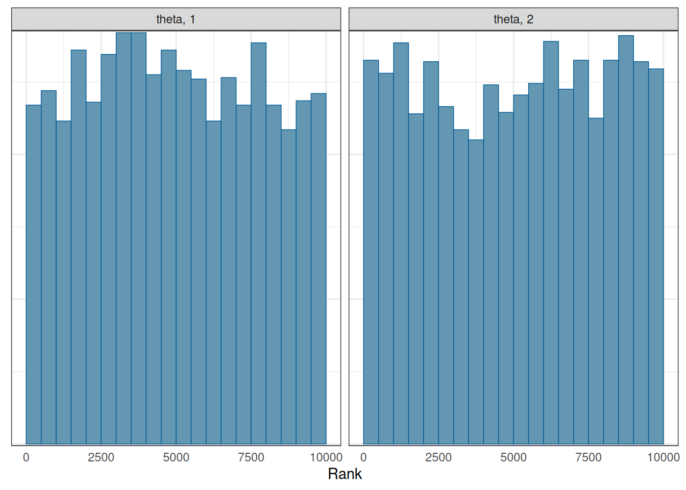

Previously, we have seen a few examples with Bayesian inferences where the posterior distribution concerns only one parameter, like the Bernoulli and the Poisson model. We have also discussed the grid approximation and the conjugate prior approaches to obtain/approximate the posterior. In this note, we will discuss the simulation method and explain why we need a special class of methods called Markov Chain Monte Carlo. This note will consider mainly the Metropolis algorithm, which subsumes many other commonly used MCMC algorithms. Therefore, it is beneficial to build a solid foundation on what the basic version of the Metropolis algorithm is. You will also write your own Metropolis sampler to understand how it works.
But first, let’s talk about the Monte Carlo method.
15.1 Monte Carlo Simulation
In a previous example, we see that with a conjugate prior (e.g., Beta), the posterior distribution is from the same distributional family (Beta). Thus, we can easily draw simulation samples from the posterior distribution using R. The more samples we draw, the better we can approximate the posterior distribution based on the simulation samples. It is the same logic to get a large sample to describe our population precisely; here, the posterior distribution, determined using mathematics, is considered the population, and the simulation draws are, well, a sample from that population. With 10,000 or 100,000 samples (draws), we can accurately describe our population (posterior).
For example, if we know that the posterior is a \(\mathrm{Beta}(15, 10)\) distribution, consider drawing 10, 100, 10,00, and 10,000 samples from it using the R function rbeta, and contrast the density estimated from the samples (in the histogram) with that of the actual Beta distribution (in red).
# Set the `seed` (initial point) for pseudo-random number generation algorithmset.seed(2)num_draws<-c(10, 100, 1000, 10000)beta_draws<-data.frame( th =rbeta(sum(num_draws), shape1 =15, shape2 =10), sam =rep(paste(num_draws, "samples"), num_draws))ggplot(beta_draws, aes(x =th))+geom_histogram(aes(y =after_stat(density)))+stat_function( fun =dbeta, args =list(shape1 =15, shape2 =10), col ="red")+labs(x =expression(theta))+facet_wrap(~sam)
`stat_bin()` using `bins = 30`. Pick better value with `binwidth`.

Figure 15.1: Monte Carlo simulation samples from the Beta(15, 10) distribution
The figure below shows the values when drawing 100 samples in time order:
beta_draws|>filter(sam=="100 samples")|>rowid_to_column("iter")|>ggplot(aes(y =th, x =iter))+geom_line()+labs(y =expression(theta))

Figure 15.2: Trace plots of Monte Carlo samples.
So we can say that, when the number of posterior samples is very large, the sample distribution converges to the population density. The Monte Carlo method will work for many situations. Note, of course, the number of simulation samples, \(S\), is controlled by the analysts; it is different from the sample size of the data, which is fixed and is a property of the observed data.
In addition, most descriptive statistics (e.g., mean, SD) of the simulation draws will converge to the corresponding values of the true posterior distribution. The graphs below show how the mean, median, SD, and skewness converge to the true values (red dashed lines) when the number of simulation samples increases.
Code
beta_draws|>filter(sam=="1000 samples")|>rowid_to_column("iter")|>mutate( mean =cumsum(th)/row_number(), median =map_dbl(row_number(), ~median(th[1:.x])), SD =map_dbl(row_number(), ~sd(th[1:.x])), skewness =map_dbl(row_number(), ~e1071::skewness(th[1:.x])))|>ungroup()|>gather("stat", "val", mean:skewness)|>ggplot(aes(x =iter, y =val))+geom_line()+geom_hline( data =data.frame( stat =c("mean", "median", "SD", "skewness"), val =c(15/25,qbeta(.50, 15, 10),sqrt(15*10/(15+10)^2/(15+10+1)),2*(10-15)*sqrt(15+10+1)/(15+10+2)/sqrt(15*10))),aes(yintercept =val), col ="red", linetype ="dashed")+facet_wrap(~stat, scales ="free")+labs(y ="")

Figure 15.3: Sample statistics of the Monte Carlo samples.
15.2 Markov Chain Monte Carlo (MCMC): Drawing Dependent Samples
The above Monte Carlo simulation requires that (a) we know that the posterior distribution is exactly a beta distribution, and (b) R knows how to draw simulation samples from a beta distribution (with rbeta). As we progress through the class, it is more of an exception that we can use conjugate prior distribution, so in general, neither (a) nor (b) would hold. For example, if we instead use a normal distribution for the prior of \(\theta\), we may get something like \[
P(\theta \mid y) = \frac{\mathrm{e}^{-(\theta - 1 / 2)^2}
\theta^y (1 - \theta)^{n - y}}
{\int_0^1 \mathrm{e}^{-(\theta^* - 1 / 2)^2}
{\theta^*}^y (1 - {\theta^*})^{n - y} d\theta^*}
\] and it would be very hard, if possible, to draw simulation samples directly from the posterior. Luckily, MCMC provides a way to draw samples from the posterior distribution without the need to know everything about the posterior distribution. For example, the basic version of the Metropolis algorithm only requires that we know the density ratio of every two possible values \(\theta_1\) and \(\theta_2\). Thus, we don’t need to deal with the integral in the denominator, as the integral does not depend on \(\theta\) and will get canceled out when taking the ratio.
15.3 The Metropolis algorithm
The Metropolis algorithm can generally be used to draw samples from a distribution as long as the density ratio of any two points can be computed. Remember, in Bayesian inference, for two values in the posterior distribution, the ratio of the posterior densities at \(\theta_1\) and \(\theta_2\) is \[
\begin{aligned}
\frac{P(\theta = \theta_2 \mid y)}{P(\theta = \theta_1 \mid y)}
& = \frac{P(y \mid \theta = \theta_2) P(\theta = \theta_2) / P(y)}
{P(y \mid \theta = \theta_1) P(\theta = \theta_1) / P(y)} \\
& = \frac{P(y \mid \theta = \theta_2) P(\theta = \theta_2)}
{P(y \mid \theta = \theta_1) P(\theta = \theta_1)}.
\end{aligned}
\] Therefore, even though we may not know \(P(\theta = \theta_1 \mid y)\) as it involves \(P(y)\) as the denominator, we can still compute the density ratio.
In addition, the Metropolis algorithm requires the use of a proposal distribution, which can be any symmetric distribution. Common choices are normal distribution or uniform distribution. For example, let’s assume we will use a \(N(0, 0.1)\) proposal distribution, with 0.1 being the standard deviation.
The steps of a Metropolis algorithm are:
Randomly start from a certain point in the parameter space, and call that point \(\theta_0\)
Randomly generate a sampled value from a \(N(\theta_0, 0.11)\) distribution. Call this proposed value \(\theta^\text{prop}\)
Compute the density ratio \([P(\theta = \theta^\text{prop} \mid y)] / [P(\theta = \theta_0 \mid y)]\)
If the ratio is larger than 1, accept \(\theta^\text{prop}\) and include this value in the sample
If the ratio is smaller than 1, accept \(\theta^\text{prop}\) with probability equal to the density ratio. For example, if the ratio is 0.7, one first generates a simulated value, \(u\), from a uniform distribution between 0 and 1 (i.e., \(U(0, 1)\)). If \(u\) is smaller than the ratio, accept \(\theta^\text{prop}\) and include it in the sample. Otherwise, reject the proposed value, and include \(\theta_0\) (again) in the sample
After accepting \(\theta^\text{prop}\) or \(\theta_0\) in the sample, denote the accepted value as \(\theta_0\), and repeat steps 2 to 6.
Compared to the Monte Carlo method, which directly samples from a Beta distribution, the Metropolis algorithm does not require an R function to draw samples from the target distribution. The cost, however, is that the sampling process is not as efficient because the sampled values are dependent. We’ll discuss this point later after seeing an example of the algorithm.
15.4 Shiny App
To see a visual demonstration, you may run the shiny app I created by typing in R
15.5 Example 1: Estimating the Number of People Taking the Metro
This example uses data from the LA Barometer survey conducted by the USC Dornsife Center for Economic and Social Research. Specifically, I’m interested in the proportion of participants who took the Metro in the previous year among first-generation immigrants in LA county. You can see a press release on the data at https://dornsife.usc.edu/news/stories/3164/labarometer-mobility-in-los-angeles-survey/
So in 338 participants who are first-generation immigrants, 86 said they had used the Metro.
Let’s use a weakly informative prior of Beta(1.5, 2), which has a weight of 1.5 prior data points, with a weak belief that less than half of the people had used the Metro.
Based on conjugacy, we know the posterior is Beta(87.5, 254). For pedagogical purposes, we will instead use a Metropolis sampler, which only requires the ratio of prior \(\times\) likelihood for any two \(\theta\) values.
15.5.1 MCMC sampling
num_yes<-86num_obs<-86+252# Define a function to compute values proportional to p(y | th) * p(th)prior_times_lik<-function(th){# Return 0 if th is out of rangeif(th<0||th>1)return(0)pth<-dbeta(th, shape1 =prior_a, shape2 =prior_b)py_given_th<-th^num_yes*(1-th)^(num_obs-num_yes)pth*py_given_th}# Define a function for generating data from the proposal distributiongenerate_proposal<-function(th, sd=0.1){rnorm(1, mean =th, sd =sd)}# Initialize the Metropolis algorithmset.seed(2037)# set the seed for reproducibilitynum_draws<-1000num_warmup<-num_draws/2th_all_draws<-rep(NA, num_draws)# Step 1: starting valueth_all_draws[1]<-0.1# counter for tracking acceptance ratenum_accepted<-0for(sinseq_len(num_draws-1)){current_th<-th_all_draws[s]# Step 2: Generate proposalproposed_th<-generate_proposal(current_th)# Step 3: Compute acceptance probabilityprob_accept<-min(1,prior_times_lik(proposed_th)/prior_times_lik(current_th))# Steps 4 & 5: etermine whether to make the jumpif(runif(1)<prob_accept){th_all_draws[s+1]<-proposed_thif(s+1>=num_warmup){num_accepted<-num_accepted+1}}else{th_all_draws[s+1]<-current_th}}
We can visualize the MCMC chain by plotting the iteration index on the x-axis and the sampled value on the y-axis:
ggplot(data.frame(th =th_all_draws, iter =seq_along(th_all_draws)),aes(x =iter, y =th))+geom_line()

Figure 15.4: Trace plots of MCMC samples for the Metro example.
Each step in MCMC is called an iteration. The sampled values are dependent, meaning that the value at iteration \(s\) depends on the value at iteration \(s - 1\). This is a major difference from functions that simulate independent random samples, like rbeta() or rnorm(). The resulting sampled values will form a Markov chain, meaning that each sampled value is correlated with the previous value (e.g., if \(\theta^{(s)}\) is large, \(\theta^{(s + 1)}\) is also large).
As shown above, the chain starts at 0.10 then quickly moves to the region around 0.25, the area with high posterior density. It then oscillates around that for the remaining iterations.
15.5.2 More on Markov Chain
A Markov chain describes how a variable transitions from one “state” to another. The current state depends on the previous state. A well-behaved Markov Chain is said to be ergodic, which means that it is (see Hoff, 2009, chapter 10):
irreducible: at any state \(\theta^{(s)}\), it can go to any value \(\theta^*\) eventually. A reducible chain is one where some states cannot get to some other states; an example is when, at some point, the chain stays as a positive value forever and never gets back to the negative side.
aperiodic: the chain does not have any periodic states. If it is a periodic chain, some values can only be visited every \(k\)th iteration.
recurrent: after the chain visits a certain state \(\theta^*\), if the chain runs long enough, it eventually returns to the same state \(\theta^*\).
Under the above conditions, a Markov chain will converge to a stationary distribution. Thus, after a certain large amount of iterations, the draws from the chain can be considered a random (but correlated) sample of the stationary distribution. Moreover, one can prove that, with the Metropolis algorithm, the converging stationary distribution is the posterior distribution (see the discussion in Kruschke, 2015, chapter 7).
15.5.3 Warm-up/Burn-in
A Markov chain needs some iterations to get to the stationary distribution. Those iterations are usually called warm-up or burn-in (depending on the algorithm and the software) iterations and are usually discarded. In many software programs, the first half of the iterations are considered warm-ups, so even though we got 1,000 iterations, only 500 will be used:
The degree to which the value at iteration \(s\) is correlated with the value at \(s - 1\) (and at \(s - 2\), etc) can be measured by the autocorrelation. For example, below shows the lag-1 correlation:
ggplot(data.frame(current =th_draws, previous =lag(th_draws)),aes(x =previous, y =current))+geom_point()+geom_smooth()
`geom_smooth()` using method = 'loess' and formula = 'y ~ x'
Figure 15.7: Trace plots and autocorrelation plots with MCMC samples.
which shows substantial autocorrelations until about nine iterations apart.
15.5.5 Acceptance Rate
When using the Metropolis algorithm, you want to monitor the acceptance rate and ensure it is within the optimal range. If you accept almost every time, it likely means that, in each iteration, the chain only jumps a tiny step (so that the acceptance ratio is close to 1 every time). As such, the chain will take many iterations to reach other regions of the stationary distribution, and consecutive draws are very strongly correlated. On the other hand, if the acceptance rate is very low, the chain gets stuck in the same location for many iterations before moving to a different state. For the basic Metropolis algorithm with one parameter, an optimal acceptance rate would be something between 40% to 50%.
For Hamiltonian Monte Carlo to be discussed later, the optimal acceptance rate would be much higher, from 80% to 99%, or even higher.
When iterations are dependent, each iteration contains overlapping information with the previous iterations. In other words, when one gets 500 dependent draws from the posterior, it only contains information equivalent to < 500 independent draws. The ESS quantifies the actual amount of information, so a chain with ESS = \(n\) will contain roughly the same information as in \(n\) independent draws. In general, we want ESS to be at least 400 for the general purpose of summarizing the posterior. You can obtain ESS using the posterior::ess_basic() function:
ess_basic(th_draws)
[1] 84.42518
which is not sufficient for summarizing the posterior.
15.5.7 Multiple Chains
Because each state in a Markov chain depends on the previous states, the starting value(s) can influence the sampled values. Remember, in complex problems, one does not know how the posterior distributions would look. One solution to check the sensitivity to the starting value(s) is to use multiple chains, each with different starting values.
If multiple chains sample the same target distribution, they should be mixing well, meaning they cross each other in a trace plot.
Below are examples of two chains with good/poor mixing.
num_yes<-86num_obs<-86+252# Define a function to compute values proportional to p(y | th) * p(th)prior_times_lik<-function(th){# Return 0 if th is out of rangeif(th<0||th>1)return(0)pth<-dbeta(th, shape1 =prior_a, shape2 =prior_b)py_given_th<-th^num_yes*(1-th)^(num_obs-num_yes)pth*py_given_th}# Define a function for generating data from the proposal distributiongenerate_proposal<-function(th, sd=0.1){rnorm(1, mean =th, sd =sd)}# Initialize the Metropolis algorithmset.seed(2037)# set the seed for reproducibilitynum_chains<-2num_draws<-10000num_warmup<-num_draws/2th_all_draws<-matrix(NA, nrow =num_draws, ncol =num_chains)th_all_draws[1, ]<-c(0.1, 0.9)# starting value# counter for tracking acceptance ratenum_accepted<-rep(0, num_chains)for(sinseq_len(num_draws-1)){for(jinseq_len(num_chains)){current_th<-th_all_draws[s, j]# Generate proposalproposed_th<-generate_proposal(current_th, sd =0.05)# Compute acceptance probabilityprob_accept<-min(1,prior_times_lik(proposed_th)/prior_times_lik(current_th))# Determine whether to make the jumpif(runif(1)<prob_accept){th_all_draws[s+1, j]<-proposed_thif(s+1>=num_warmup){num_accepted[j]<-num_accepted[j]+1}}else{th_all_draws[s+1, j]<-current_th}}}# Save the draws after warm-upth_draws<-th_all_draws[-(1:num_warmup), ]
As shown below, the MCMC draws approximate the posterior distribution reasonably well.
ggplot(data.frame(th =c(th_draws)), aes(x =th))+# Plot histogram, with density on y axisgeom_histogram(binwidth =0.0025, aes(y =after_stat(density)))+# Overlay the theoretical Beta distributionstat_function( fun =dbeta, args =list( shape1 =86+prior_a, shape2 =252+prior_b), col ="red")+labs(x =expression(theta))# Acceptance ratesum(num_accepted)/length(th_draws)
[1] 0.4889

Figure 15.8: Comparing MCMC samples to the theoretical posterior distribution for the Metro example.
15.5.9 Convergence Check
The goal of checking for convergence of MCMC samples is to ensure that the draws are representative samples of the posterior distribution, and that they contain sufficient information to describe it. Convergence can be considered in two aspects:
Mixing
Stationarity
We’ll see some tools in R for diagnosing convergence.
15.5.9.1 Trace Plot
Multiple chains have good mixing if they frequently cross each other. If two chains iterate in different regions of the posterior distribution and never cross each other, they don’t mix well. You can check mixing using the trace plot. The below graph shows the two chains mixing well.
# Convert to `draws_array` object to use the following functionsth_draws_array<-draws_array( theta =th_draws, .nchains =num_chains)# Trace plotmcmc_trace(th_draws_array)

Figure 15.9: Trace plots of multiple chains.
15.5.9.2 Rank Histograms
Another useful tool is the rank histogram, recently proposed by Vehtari et al. (2021). The idea is first to convert the posterior values into ranks and then look at the distributions of the ranks across iterations. If the chains mix well and all explore the same target distribution, the average rank in an interval of iterations should be similar for every chain. Therefore, the rank histogram should show something close to a uniform distribution, as shown below:
# Rank plotmcmc_rank_hist(th_draws_array)

Figure 15.10: Rank histograms of two chains.
15.5.9.3\(\hat{R}\)
A commonly used index in diagnosing convergence is \(\hat{R}\), also called the potential scale reduction factor, proposed by Gelman & Rubin (1992) and later extended for multivariate distributions by Brooks & Gelman (1998). Vehtari et al. (2021) further improved it to account for unequal variances across chains using rank normalization and folding. \(\hat R\) measures the ratio of the total variability combining multiple chains to the within-chain variability. When the Markov chains converge, each chain is based on the same posterior distribution, and they should have the same variance. Therefore, if the chains converge, there should be no between-chain variability, so \(\hat R\) should be very close to 1.0.1
While in older literature, the cutoff of \(\hat R\) < 1.1 was usually used, Vehtari et al. (2021) recommended a safer criterion of \(\hat R\) < 1.01.
You can use the summarize_draws() function from the posterior package, which provides summary statistics of the posterior and some convergence diagnostics.
summarize_draws(th_draws_array)
The numbers ess_bulk and ess_tail are two ways to compute ESS. ess_bulk says more about the center region of the posterior and is useful when assessing how accurate the mean of the posterior draws approximates the true posterior mean (or the posterior median). ess_tail is most useful for assessing how accurate the sample quantiles in the tail areas (e.g., 1st, 95th) approximate the true posterior quantiles. For example, the accuracy of the credible intervals would require a large ess_tail.
ESS should be at least 400 for \(\hat R\) to be useful in diagnosing convergence.
Brooks, S. P., & Gelman, A. (1998). General methods for monitoring convergence of iterative simulations. Journal of Computational and Graphical Statistics, 7(4), 434–455. https://doi.org/10.1080/10618600.1998.10474787
Gelman, A., & Rubin, D. B. (1992). Inference from iterative simulation using multiple sequences. Statistical Science, 7(4). https://doi.org/10.1214/ss/1177011136
Vehtari, A., Gelman, A., Simpson, D., Carpenter, B., & Bürkner, P.-C. (2021). Rank-normalization, folding, and localization: An improved Rˆ for assessing convergence of MCMC (with discussion). Bayesian Analysis, 16(2). https://doi.org/10.1214/20-BA1221
Note that in Stan, \(\hat{R}\) is computed by splitting each chain into half. So if you have two chains, \(\hat{R}\) will be based on four groups.↩︎
Source Code
# Markov Chain Monte Carlo```{r}#| include: falsecomma <-function(x, digits =2L) format(x, digits = digits, big.mark =",")library(tidyverse)theme_set(theme_bw() +theme(panel.grid.major.y =element_line(color ="grey92")))library(here)library(haven)library(posterior)library(bayesplot)library(cmdstanr)```Previously, we have seen a few examples with Bayesian inferences where the posterior distribution concerns only one parameter, like the Bernoulli and the Poisson model. We have also discussed the grid approximation and the conjugate prior approaches to obtain/approximate the posterior. In this note, we will discuss the simulation method and explain why we need a special class of methods called *Markov Chain Monte Carlo*. This note will consider mainly the **Metropolis algorithm**, which subsumes many other commonly used MCMC algorithms. Therefore, it is beneficial to build a solid foundation on what the basic version of the Metropolis algorithm is. You will also write your own Metropolis sampler to understand how it works.But first, let's talk about the Monte Carlo method.## Monte Carlo SimulationIn a previous example, we see that with a conjugate prior (e.g., Beta), the posterior distribution is from the same distributional family (Beta). Thus, we can easily draw simulation samples from the posterior distribution using R. The more samples we draw, the better we can approximate the posterior distribution based on the simulation samples. It is the same logic to get a large sample to describe our population precisely; here, the posterior distribution, determined using mathematics, is considered the population, and the simulation draws are, well, a sample from that population. With 10,000 or 100,000 samples (draws), we can accurately describe our population (posterior).For example, if we know that the posterior is a $\mathrm{Beta}(15, 10)$ distribution, consider drawing 10, 100, 10,00, and 10,000 samples from it using the R function `rbeta`, and contrast the density estimated from the samples (in the histogram) with that of the actual Beta distribution (in red).```{r}#| label: fig-sim-beta#| fig-cap: "Monte Carlo simulation samples from the Beta(15, 10) distribution"# Set the `seed` (initial point) for pseudo-random number generation algorithmset.seed(2)num_draws <-c(10, 100, 1000, 10000)beta_draws <-data.frame(th =rbeta(sum(num_draws), shape1 =15, shape2 =10),sam =rep(paste(num_draws, "samples"), num_draws))ggplot(beta_draws, aes(x = th)) +geom_histogram(aes(y =after_stat(density))) +stat_function(fun = dbeta, args =list(shape1 =15, shape2 =10),col ="red" ) +labs(x =expression(theta)) +facet_wrap(~sam)```The figure below shows the values when drawing 100 samples in time order:```{r}#| label: fig-trace-beta#| fig-cap: "Trace plots of Monte Carlo samples."beta_draws |>filter(sam =="100 samples") |>rowid_to_column("iter") |>ggplot(aes(y = th, x = iter)) +geom_line() +labs(y =expression(theta))```So we can say that, when the number of posterior samples is very large, the sample distribution *converges* to the population density. The Monte Carlo method will work for many situations. Note, of course, the number of simulation samples, $S$, is controlled by the analysts; it is different from the sample size of the data, which is fixed and is a property of the observed data.In addition, most descriptive statistics (e.g., mean, *SD*) of the simulation draws will converge to the corresponding values of the true posterior distribution. The graphs below show how the mean, median, *SD*, and skewness converge to the true values (red dashed lines) when the number of simulation samples increases.```{r}#| code-fold: true#| label: fig-sample-stat-converge#| fig-cap: "Sample statistics of the Monte Carlo samples."beta_draws |>filter(sam =="1000 samples") |>rowid_to_column("iter") |>mutate(mean =cumsum(th) /row_number(),median =map_dbl(row_number(), ~median(th[1:.x])),SD =map_dbl(row_number(), ~sd(th[1:.x])),skewness =map_dbl(row_number(), ~ e1071::skewness(th[1:.x])) ) |>ungroup() |>gather("stat", "val", mean:skewness) |>ggplot(aes(x = iter, y = val)) +geom_line() +geom_hline(data =data.frame(stat =c("mean", "median", "SD", "skewness"),val =c(15/25,qbeta(.50, 15, 10),sqrt(15*10/ (15+10)^2/ (15+10+1)),2* (10-15) *sqrt(15+10+1) / (15+10+2) /sqrt(15*10) ) ),aes(yintercept = val), col ="red", linetype ="dashed" ) +facet_wrap(~stat, scales ="free") +labs(y ="")```## Markov Chain Monte Carlo (MCMC): Drawing Dependent SamplesThe above Monte Carlo simulation requires that (a) we know that the posterior distribution is exactly a beta distribution, and (b) R knows how to draw simulation samples from a beta distribution (with `rbeta`). As we progress through the class, it is more of an exception that we can use conjugate prior distribution, so in general, neither (a) nor (b) would hold. For example, if we instead use a normal distribution for the prior of $\theta$, we may get something like$$P(\theta \mid y) = \frac{\mathrm{e}^{-(\theta - 1 / 2)^2} \theta^y (1 - \theta)^{n - y}} {\int_0^1 \mathrm{e}^{-(\theta^* - 1 / 2)^2} {\theta^*}^y (1 - {\theta^*})^{n - y} d\theta^*}$$and it would be very hard, if possible, to draw simulation samples directly from the posterior. Luckily, MCMC provides a way to draw samples from the posterior distribution without the need to know everything about the posterior distribution. For example, the basic version of the Metropolis algorithm only requires that we know the *density ratio* of every two possible values $\theta_1$ and $\theta_2$. Thus, we don't need to deal with the integral in the denominator, as the integral does not depend on $\theta$ and will get canceled out when taking the ratio.## The Metropolis algorithmThe Metropolis algorithm can generally be used to draw samples from a distribution as long as the density ratio of any two points can be computed. Remember, in Bayesian inference, for two values in the posterior distribution, the ratio of the posterior densities at $\theta_1$ and $\theta_2$ is$$\begin{aligned} \frac{P(\theta = \theta_2 \mid y)}{P(\theta = \theta_1 \mid y)} & = \frac{P(y \mid \theta = \theta_2) P(\theta = \theta_2) / P(y)} {P(y \mid \theta = \theta_1) P(\theta = \theta_1) / P(y)} \\ & = \frac{P(y \mid \theta = \theta_2) P(\theta = \theta_2)} {P(y \mid \theta = \theta_1) P(\theta = \theta_1)}.\end{aligned}$$Therefore, even though we may not know $P(\theta = \theta_1 \mid y)$ as it involves $P(y)$ as the denominator, we can still compute the density ratio.In addition, the Metropolis algorithm requires the use of a **proposal distribution**, which can be any symmetric distribution. Common choices are normal distribution or uniform distribution. For example, let's assume we will use a $N(0, 0.1)$ proposal distribution, with 0.1 being the standard deviation.The steps of a Metropolis algorithm are:1. Randomly start from a certain point in the parameter space, and call that point $\theta_0$2. Randomly generate a sampled value from a $N(\theta_0, 0.11)$ distribution. Call this proposed value $\theta^\text{prop}$3. Compute the density ratio $[P(\theta = \theta^\text{prop} \mid y)] / [P(\theta = \theta_0 \mid y)]$4. If the ratio is larger than 1, accept $\theta^\text{prop}$ and include this value in the sample5. If the ratio is smaller than 1, accept $\theta^\text{prop}$ with probability equal to the density ratio. For example, if the ratio is 0.7, one first generates a simulated value, $u$, from a uniform distribution between 0 and 1 (i.e., $U(0, 1)$). If $u$ is smaller than the ratio, accept $\theta^\text{prop}$ and include it in the sample. Otherwise, reject the proposed value, and include $\theta_0$ (again) in the sample6. After accepting $\theta^\text{prop}$ or $\theta_0$ in the sample, denote the accepted value as $\theta_0$, and repeat steps 2 to 6.Compared to the Monte Carlo method, which directly samples from a Beta distribution, the Metropolis algorithm does not require an R function to draw samples from the target distribution. The cost, however, is that the sampling process is not as *efficient* because the sampled values are dependent. We'll discuss this point later after seeing an example of the algorithm.***## Shiny AppTo see a visual demonstration, you may run the shiny app I created by typing in R```{r}#| eval: false#| echo: trueshiny::runGitHub("metropolis_demo", "marklhc")```***## Example 1: Estimating the Number of People Taking the MetroThis example uses data from the [LA Barometer](https://cesr.usc.edu/labarometer/overview) survey conducted by the USC Dornsife Center for Economic and Social Research. Specifically, I'm interested in the proportion of participants who took the Metro in the previous year among first-generation immigrants in LA county. You can see a press release on the data at <https://dornsife.usc.edu/news/stories/3164/labarometer-mobility-in-los-angeles-survey/>```{r}uas_dat <-read_dta(here("data", "uas219_psyc573.dta"))uas_dat |>filter(immigrant_status ==0) |>count(tr002s2)```So in `r sum(uas_dat$immigrant_status == 1)` participants who are first-generation immigrants, 86 said they had used the Metro.Let's use a weakly informative prior of Beta(1.5, 2), which has a weight of 1.5 prior data points, with a weak belief that less than half of the people had used the Metro.Model:$$\text{usemetro}_i \sim \mathrm{Bern}(\theta)$$Prior:$$\theta \sim \mathrm{Beta}(1.5, 2)$$```{r}prior_a <-1.5prior_b <-2```Based on conjugacy, we know the posterior is Beta(`r 86 + prior_a`, `r 252 + prior_b`). For pedagogical purposes, we will instead use a Metropolis sampler, which only requires the ratio of prior $\times$ likelihood for any two $\theta$ values.### MCMC sampling```{r}num_yes <-86num_obs <-86+252# Define a function to compute values proportional to p(y | th) * p(th)prior_times_lik <-function(th) {# Return 0 if th is out of rangeif (th <0|| th >1) return(0) pth <-dbeta(th, shape1 = prior_a, shape2 = prior_b) py_given_th <- th ^ num_yes * (1- th) ^ (num_obs - num_yes) pth * py_given_th}# Define a function for generating data from the proposal distributiongenerate_proposal <-function(th, sd =0.1) {rnorm(1, mean = th, sd = sd)}# Initialize the Metropolis algorithmset.seed(2037) # set the seed for reproducibilitynum_draws <-1000num_warmup <- num_draws /2th_all_draws <-rep(NA, num_draws)# Step 1: starting valueth_all_draws[1] <-0.1# counter for tracking acceptance ratenum_accepted <-0for (s inseq_len(num_draws -1)) { current_th <- th_all_draws[s]# Step 2: Generate proposal proposed_th <-generate_proposal(current_th)# Step 3: Compute acceptance probability prob_accept <-min(1,prior_times_lik(proposed_th) /prior_times_lik(current_th) )# Steps 4 & 5: etermine whether to make the jumpif (runif(1) < prob_accept) { th_all_draws[s +1] <- proposed_thif (s +1>= num_warmup) { num_accepted <- num_accepted +1 } } else { th_all_draws[s +1] <- current_th }}```We can visualize the MCMC chain by plotting the iteration index on the x-axis and the sampled value on the y-axis:```{r}#| label: fig-trace-usemetro#| fig-cap: "Trace plots of MCMC samples for the Metro example."ggplot(data.frame(th = th_all_draws, iter =seq_along(th_all_draws)),aes(x = iter, y = th)) +geom_line()```Each step in MCMC is called an *iteration*. The sampled values are *dependent*, meaning that the value at iteration $s$ depends on the value at iteration $s - 1$. This is a major difference from functions that simulate independent random samples, like `rbeta()` or `rnorm()`. The resulting sampled values will form a *Markov chain*, meaning that each sampled value is correlated with the previous value (e.g., if $\theta^{(s)}$ is large, $\theta^{(s + 1)}$ is also large).As shown above, the chain starts at 0.10 then quickly moves to the region around 0.25, the area with high posterior density. It then oscillates around that for the remaining iterations.### More on Markov ChainA Markov chain describes how a variable transitions from one "state" to another. The current state depends on the previous state. A well-behaved Markov Chain is said to be *ergodic*, which means that it is (see [Hoff, 2009](https://pdhoff.github.io/book/), chapter 10):- *irreducible*: at any state $\theta^{(s)}$, it can go to any value $\theta^*$ eventually. A reducible chain is one where some states cannot get to some other states; an example is when, at some point, the chain stays as a positive value forever and never gets back to the negative side.- *aperiodic*: the chain does not have any periodic states. If it is a periodic chain, some values can only be visited every $k$th iteration.- *recurrent*: after the chain visits a certain state $\theta^*$, if the chain runs long enough, it eventually returns to the same state $\theta^*$.Under the above conditions, a Markov chain will converge to a *stationary distribution*. Thus, after a certain large amount of iterations, the draws from the chain can be considered a random (but correlated) sample of the stationary distribution. Moreover, one can prove that, with the Metropolis algorithm, the converging stationary distribution is the posterior distribution (see the discussion in Kruschke, 2015, chapter 7).### Warm-up/Burn-inA Markov chain needs some iterations to get to the stationary distribution. Those iterations are usually called *warm-up* or *burn-in* (depending on the algorithm and the software) iterations and are usually discarded. In many software programs, the first half of the iterations are considered warm-ups, so even though we got 1,000 iterations, only 500 will be used:```{r}num_warmup <- num_draws /2th_draws <- th_all_draws[- (1:num_warmup)]```### AutocorrelationThe degree to which the value at iteration $s$ is correlated with the value at $s - 1$ (and at $s - 2$, etc) can be measured by the autocorrelation. For example, below shows the lag-1 correlation:```{r}#| label: fig-autocor#| fig-cap: "Scatterplot of observations at iteration s against observations at iteration s - 1, with MCMC samples."ggplot(data.frame(current = th_draws,previous =lag(th_draws)),aes(x = previous, y = current)) +geom_point() +geom_smooth()```Compared to samples from `rbeta()````{r}#| label: fig-autocor-mc#| fig-cap: "Scatterplot of observations at iteration s against observations at iteration s - 1, with independent Monte Carlo samples."rbeta_draws <-rbeta(num_draws, shape1 =87.5, shape2 =254)ggplot(data.frame(current = rbeta_draws,previous =lag(rbeta_draws)),aes(x = previous, y = current)) +geom_point() +geom_smooth()```You can get the autocorrelation function plot (autocorrelation plot on the right):```{r}#| label: fig-autocor-combo#| fig-cap: "Trace plots and autocorrelation plots with MCMC samples."mcmc_combo(data.frame(theta = th_draws),combo =c("trace", "acf"))```which shows substantial autocorrelations until about nine iterations apart.### Acceptance RateWhen using the Metropolis algorithm, you want to monitor the acceptance rate and ensure it is within the optimal range. If you accept almost every time, it likely means that, in each iteration, the chain only jumps a tiny step (so that the acceptance ratio is close to 1 every time). As such, the chain will take many iterations to reach other regions of the stationary distribution, and consecutive draws are very strongly correlated. On the other hand, if the acceptance rate is very low, the chain gets stuck in the same location for many iterations before moving to a different state. For the basic Metropolis algorithm with one parameter, an optimal acceptance rate would be something between 40% to 50%.::: {.callout-tip}For Hamiltonian Monte Carlo to be discussed later, the optimal acceptance rate would be much higher, from 80% to 99%, or even higher.:::```{r}# Acceptance ratesum(num_accepted) /length(th_draws)```### Effective sample size (ESS)When iterations are dependent, each iteration contains overlapping information with the previous iterations. In other words, when one gets 500 dependent draws from the posterior, it only contains information equivalent to < 500 independent draws. The ESS quantifies the actual amount of information, so a chain with ESS = $n$ will contain roughly the same information as in $n$ independent draws. In general, we want ESS to be at least 400 for the general purpose of summarizing the posterior. You can obtain ESS using the `posterior::ess_basic()` function:```{r}ess_basic(th_draws)```which is not sufficient for summarizing the posterior.### Multiple ChainsBecause each state in a Markov chain depends on the previous states, the starting value(s) can influence the sampled values. Remember, in complex problems, one does not know how the posterior distributions would look. One solution to check the sensitivity to the starting value(s) is to use multiple chains, each with different starting values.> If multiple chains sample the same target distribution, they should be *mixing* well, meaning they cross each other in a trace plot.Below are examples of two chains with good/poor mixing.::: {.panel-tabset}### Poor Mixing```{r}#| include: false# Initialize the Metropolis algorithmset.seed(2037) # set the seed for reproducibilitynum_chains <-2num_draws <-500num_warmup <- num_draws /2th_all_draws <-matrix(NA, nrow = num_draws, ncol = num_chains)th_all_draws[1, ] <-c(0.1, 0.9) # starting valuefor (s inseq_len(num_draws -1)) {for (j inseq_len(num_chains)) { current_th <- th_all_draws[s, j]# Generate proposal proposed_th <-generate_proposal(current_th, sd =0.005)# Compute acceptance probability prob_accept <-min(1,prior_times_lik(proposed_th) /prior_times_lik(current_th) )# Determine whether to make the jumpif (runif(1) < prob_accept) { th_all_draws[s +1, j] <- proposed_thif (s +1>= num_warmup) { num_accepted[j] <- num_accepted[j] +1 } } else { th_all_draws[s +1, j] <- current_th } }}# Save the draws after warm-upth_draws <- th_all_draws[- (1:num_warmup), ]``````{r}#| echo: false# Convert to `draws_array` object to use the following functionsth_draws_array <-draws_array(theta = th_draws,.nchains = num_chains)# Trace plotmcmc_trace(th_draws_array)```### Better Mixing```{r sample-metropolis-2, include = FALSE}# Initialize the Metropolis algorithmset.seed(2037) # set the seed for reproducibilitynum_chains <- 2num_draws <- 500num_warmup <- num_draws / 2th_all_draws <- matrix(NA, nrow = num_draws, ncol = num_chains)th_all_draws[1, ] <- c(0.1, 0.9) # starting value# counter for tracking acceptance ratenum_accepted <- rep(0, num_chains)for (s in seq_len(num_draws - 1)) { for (j in seq_len(num_chains)) { current_th <- th_all_draws[s, j] # Generate proposal proposed_th <- generate_proposal(current_th, sd = 0.03) # Compute acceptance probability prob_accept <- min( 1, prior_times_lik(proposed_th) / prior_times_lik(current_th) ) # Determine whether to make the jump if (runif(1) < prob_accept) { th_all_draws[s + 1, j] <- proposed_th if (s + 1 >= num_warmup) { num_accepted[j] <- num_accepted[j] + 1 } } else { th_all_draws[s + 1, j] <- current_th } }}# Save the draws after warm-upth_draws <- th_all_draws[- (1:num_warmup), ]``````{r}#| echo: false# Convert to `draws_array` object to use the following functionsth_draws_array <-draws_array(theta = th_draws,.nchains = num_chains)# Trace plotmcmc_trace(th_draws_array)```:::### Full R Code With More Iterations```{r}#| code-fold: truenum_yes <-86num_obs <-86+252# Define a function to compute values proportional to p(y | th) * p(th)prior_times_lik <-function(th) {# Return 0 if th is out of rangeif (th <0|| th >1) return(0) pth <-dbeta(th, shape1 = prior_a, shape2 = prior_b) py_given_th <- th ^ num_yes * (1- th) ^ (num_obs - num_yes) pth * py_given_th}# Define a function for generating data from the proposal distributiongenerate_proposal <-function(th, sd =0.1) {rnorm(1, mean = th, sd = sd)}# Initialize the Metropolis algorithmset.seed(2037) # set the seed for reproducibilitynum_chains <-2num_draws <-10000num_warmup <- num_draws /2th_all_draws <-matrix(NA, nrow = num_draws, ncol = num_chains)th_all_draws[1, ] <-c(0.1, 0.9) # starting value# counter for tracking acceptance ratenum_accepted <-rep(0, num_chains)for (s inseq_len(num_draws -1)) {for (j inseq_len(num_chains)) { current_th <- th_all_draws[s, j]# Generate proposal proposed_th <-generate_proposal(current_th, sd =0.05)# Compute acceptance probability prob_accept <-min(1,prior_times_lik(proposed_th) /prior_times_lik(current_th) )# Determine whether to make the jumpif (runif(1) < prob_accept) { th_all_draws[s +1, j] <- proposed_thif (s +1>= num_warmup) { num_accepted[j] <- num_accepted[j] +1 } } else { th_all_draws[s +1, j] <- current_th } }}# Save the draws after warm-upth_draws <- th_all_draws[- (1:num_warmup), ]```As shown below, the MCMC draws approximate the posterior distribution reasonably well.```{r}#| label: fig-mcmc-hist#| fig-cap: "Comparing MCMC samples to the theoretical posterior distribution for the Metro example."ggplot(data.frame(th =c(th_draws)), aes(x = th)) +# Plot histogram, with density on y axisgeom_histogram(binwidth =0.0025, aes(y =after_stat(density))) +# Overlay the theoretical Beta distributionstat_function(fun = dbeta,args =list(shape1 =86+ prior_a,shape2 =252+ prior_b ),col ="red" ) +labs(x =expression(theta))# Acceptance ratesum(num_accepted) /length(th_draws)```### Convergence CheckThe goal of checking for convergence of MCMC samples is to ensure that the draws are *representative* samples of the posterior distribution, and that they contain *sufficient information* to describe it. Convergence can be considered in two aspects:- *Mixing*- *Stationarity*We'll see some tools in R for diagnosing convergence.#### Trace PlotMultiple chains have good *mixing* if they frequently cross each other. If two chains iterate in different regions of the posterior distribution and never cross each other, they don't mix well. You can check mixing using the trace plot. The below graph shows the two chains mixing well.```{r}#| label: fig-trace-th-draws#| fig-cap: "Trace plots of multiple chains."# Convert to `draws_array` object to use the following functionsth_draws_array <-draws_array(theta = th_draws,.nchains = num_chains)# Trace plotmcmc_trace(th_draws_array)```#### Rank HistogramsAnother useful tool is the rank histogram, recently proposed by [@vehtari2021](https://projecteuclid.org/journals/bayesian-analysis/volume-16/issue-2/Rank-Normalization-Folding-and-Localization--An-Improved-R%cb%86-for/10.1214/20-BA1221.full). The idea is first to convert the posterior values into ranks and then look at the distributions of the ranks across iterations. If the chains mix well and all explore the same target distribution, the average rank in an interval of iterations should be similar for every chain. Therefore, the rank histogram should show something close to a uniform distribution, as shown below:```{r}#| label: fig-rank-th-draws#| fig-cap: "Rank histograms of two chains."# Rank plotmcmc_rank_hist(th_draws_array)```#### $\hat{R}$A commonly used index in diagnosing convergence is $\hat{R}$, also called the potential scale reduction factor, proposed by @gelman1992 and later extended for multivariate distributions by @brooks1998. @vehtari2021 further improved it to account for unequal variances across chains using rank normalization and folding. $\hat R$ measures the ratio of the total variability combining multiple chains to the within-chain variability. When the Markov chains converge, each chain is based on the same posterior distribution, and they should have the same variance. Therefore, if the chains converge, there should be no between-chain variability, so $\hat R$ should be very close to 1.0.[^stan-rhat][^stan-rhat]: Note that in Stan, $\hat{R}$ is computed by splitting each chain into half. So if you have two chains, $\hat{R}$ will be based on four groups.While in older literature, the cutoff of $\hat R$ < 1.1 was usually used, **Vehtari et al. (2021) recommended a safer criterion of $\hat R$ < 1.01.**You can use the `summarize_draws()` function from the `posterior` package, which provides summary statistics of the posterior and some convergence diagnostics.```{r}summarize_draws(th_draws_array)```The numbers `ess_bulk` and `ess_tail` are two ways to compute ESS. `ess_bulk` says more about the center region of the posterior and is useful when assessing how accurate the mean of the posterior draws approximates the true posterior mean (or the posterior median). `ess_tail` is most useful for assessing how accurate the sample quantiles in the tail areas (e.g., 1st, 95th) approximate the true posterior quantiles. For example, the accuracy of the credible intervals would require a large `ess_tail`.As recommended by @vehtari2021,> ESS should be at least 400 for $\hat R$ to be useful in diagnosing convergence.